授权实景图
授权实景图
欢乐港湾
欢乐港湾位于宝安中心海湾，摩天轮、湾区之声演艺中心、商业街与滨海公园集中在同一片海湾，公共空间免费但体验项目各自运营。这…
DISTRICT GUIDE · 53 PLACES
西部海岸、古墟、工业社区与全市最密集的民办博物馆群。
SMALL PICKS
琥珀、贝壳、紫砂、陶瓷、奇石和杂技馆数量多，但不少位于产业园或社区，先预约比临时到场更稳妥。
ALL PLACES
授权实景图
欢乐港湾位于宝安中心海湾，摩天轮、湾区之声演艺中心、商业街与滨海公园集中在同一片海湾，公共空间免费但体验项目各自运营。这…
 授权实景图
授权实景图
滨海文化公园位于宝安中心，大草坪、海岸线和宝安图书馆等公共建筑形成开阔城市客厅，和欢乐港湾商业项目相邻但游览节奏更松。从…
 授权实景图
授权实景图
西湾红树林公园位于固戍西部海岸，潮滩、红树林、跨海桥和机场航线叠成独特景观，飞机并非唯一看点，候鸟与海岸生态更需要克制观…
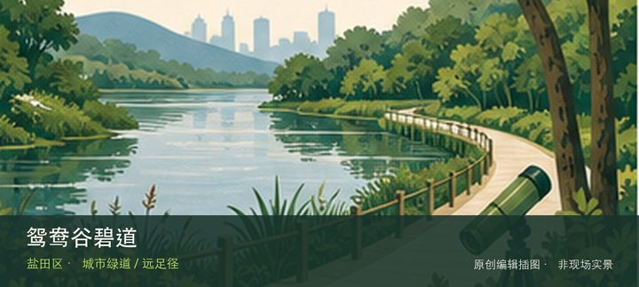
授权实景图宝安公园位于新安城区，低山、环山步道和社区运动空间构成宝安老城区的日常登高点，难度低于郊野山线但仍有连续坡段。这处地点的…
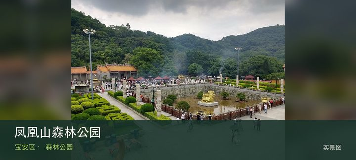
授权实景图凤凰山森林公园位于福永凤凰片区，山林、凤岩古庙和望烟楼等节点把登高与民间信仰结合，节假日进香客流会显著改变交通和游线。若…
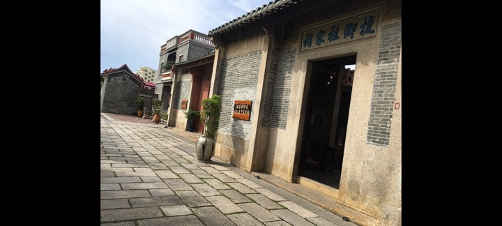
编辑配图·非现场实景凤凰古村位于福永凤凰社区，祠堂、古井、石巷和仍在使用的民居保存岭南村落格局，适合与凤凰山分开慢看而非只作登山通道。现场的…
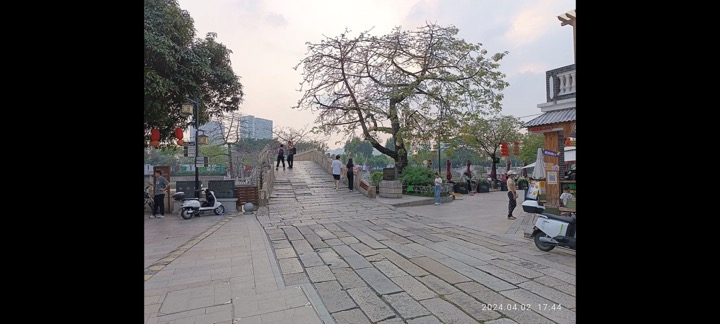
编辑配图·非现场实景清平古墟位于新桥街道，永兴桥、古墟街巷和更新后的展演空间共同延续商贸节点记忆，当期市集与演出会改变现场氛围。若只匆匆经过…
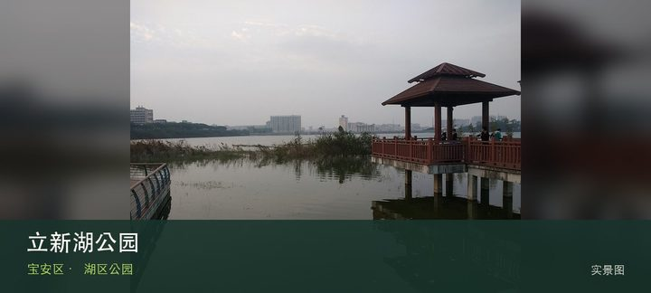
授权实景图立新湖公园位于福永，环湖绿道、亲水平台和社区休闲设施围绕水体展开，路线平缓但完整绕湖距离仍需按体力取舍。这里不是只有一个…
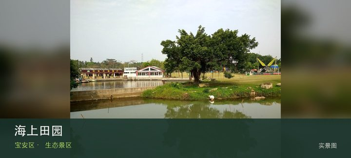
授权实景图海上田园位于沙井西部湿地，水乡湿地、农业展示和亲子体验按景区方式运营，项目、票价和表演时刻会直接决定是否值得安排整天。把…
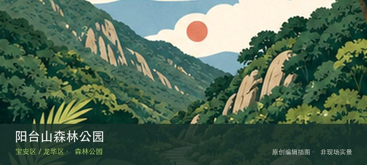
编辑配图·非现场实景阳台山森林公园位于宝安石岩侧与龙华大浪侧，跨区山体总面积大，石岩侧与大浪侧对应不同入口、爬升和返程体系，必须先选一侧再谈…
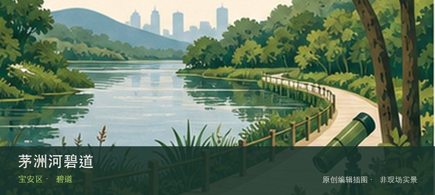
编辑配图·非现场实景茅洲河碧道位于燕罗与松岗沿河，碧道穿过工业社区、生态修复河段与桥梁节点，能直观看到污染治理后的城市水岸如何重新进入公共生…
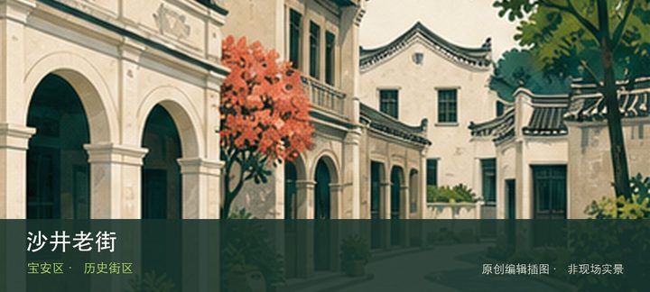
编辑配图·非现场实景沙井老街位于沙井，旧街、宗祠、蚝乡饮食与社区商业保留珠江口聚落记忆，和蚝文化博物馆组合能避免只把它当餐饮街。把注意力放在…
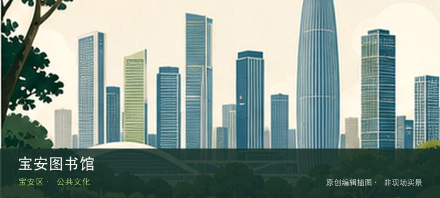
编辑配图·非现场实景宝安图书馆位于宝安中心，大体量阅读空间、展览活动与滨海公共建筑群相连，是把欢乐港湾户外行程转换为雨天室内计划的关键节点。…
罗田森林公园位于燕罗北部，北部山林、开阔草地和骑行道路构成远离中心区的休闲空间，开放路段与交通接驳比景点名本身更重要。从…
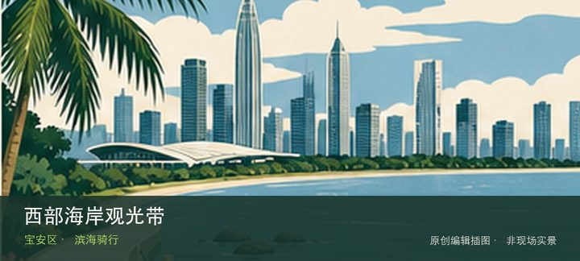
编辑配图·非现场实景西部海岸观光带位于固戍向前海方向，沿机场、红树林与前海湾展开的慢行网络仍在持续完善，不同区段可能被工程、潮汐或管理边界切…
深圳（宝安）劳务工博物馆位于石岩上屋，依托旧工业建筑记录外来劳务工的生产、居住与城市贡献，是理解深圳制造业背后普通劳动者…
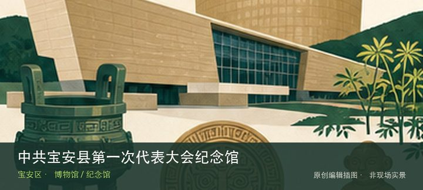
编辑配图·非现场实景中共宝安县第一次代表大会纪念馆位于燕罗素白陈公祠，纪念馆把早期党组织活动放入传统陈氏宗祠空间，革命史与地方建筑在同一地点…
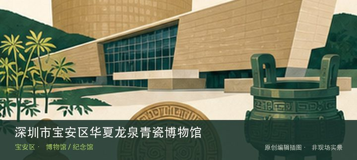
编辑配图·非现场实景深圳市宝安区华夏龙泉青瓷博物馆位于福海，以龙泉青瓷的釉色、器形和烧造传统为专题，能把宋元以来的窑业技术与当代收藏放在一条…
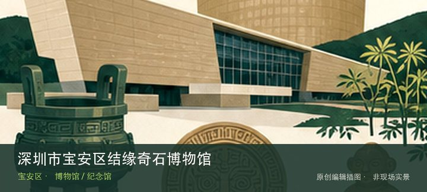
编辑配图·非现场实景深圳市宝安区结缘奇石博物馆位于航城，天然奇石的纹理、造型和产地构成主要叙事，观看时应区分地质材料事实与后来的审美命名。与…
深圳市宝安区锦舟陶瓷博物馆位于新安，陶瓷器物按胎、釉、纹饰和用途展开，适合比较日用器与陈设器如何反映不同生活和审美。现场…
深圳市宝安区老战士纪念馆位于海上田园，以老战士经历、军旅物件和口述记忆为主题，所在景区并不改变场馆当前闭馆的事实。这处地…
深圳市宝安区沙井蚝文化博物馆位于沙井老街，围绕蚝田、养殖工具、饮食和沙井社区发展讲述珠江口生产文化，是进入老街前最清楚的…
深圳市宝安区一雍紫砂博物馆位于西乡，以紫砂泥料、壶型和制壶技法为核心，适合从一把壶观察材料、手工和饮茶方式之间的约束。现…
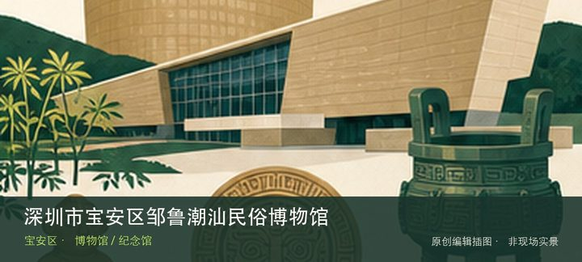
编辑配图·非现场实景深圳市宝安区邹鲁潮汕民俗博物馆位于西乡，潮汕民俗器物、礼仪与生活场景体现移民群体如何在深圳保存地域文化，专题区别于一般古…
深圳市当代名家文房四宝博物馆位于西乡，笔、墨、纸、砚的材料与制作工艺构成完整书写系统，名家作品只是理解工具如何影响表达的…
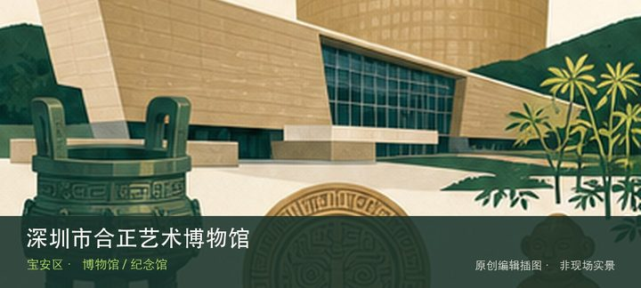
编辑配图·非现场实景深圳市合正艺术博物馆位于新安，综合艺术收藏与阶段性展陈构成民办馆特色，具体门类和开放安排可能变化，专程前往需先确认当期主…
深圳市十里红妆民俗博物馆位于福永，围绕传统婚俗、嫁妆家具和女性生活器物展开，红妆场景背后是宗族、家庭与手工艺关系，但当前…
深圳市宝安区宝弘博物馆位于西乡，民办综合收藏馆的实际展陈以当期开放为准，观看重点应落在明确藏品门类与策展线索而非馆名规模…
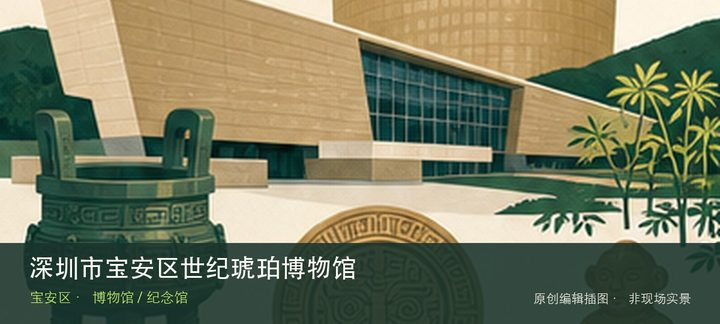
编辑配图·非现场实景深圳市宝安区世纪琥珀博物馆位于松岗，琥珀形成、内含物、加工和产业链构成从自然材料到珠宝商品的完整路径，适合与水贝类场馆对…
深圳市海之洋贝壳博物馆位于沙井，贝壳形态、生物分类与海洋生态是核心，不同于单纯工艺品展示，适合从结构差异认识软体动物适应…
深圳市宝安区鼎坤陶瓷博物馆位于新安，以陶瓷器物和工艺收藏为主，可通过胎釉、窑口和修复痕迹与区内其他陶瓷馆建立比较而非重复…
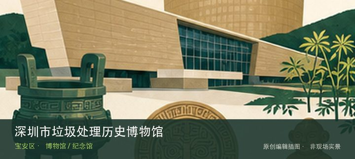
编辑配图·非现场实景深圳市垃圾处理历史博物馆位于燕罗，以深圳环卫设施、垃圾处理技术和城市消费变化为线索，真实处理场地语境使参观必须服从预约与…
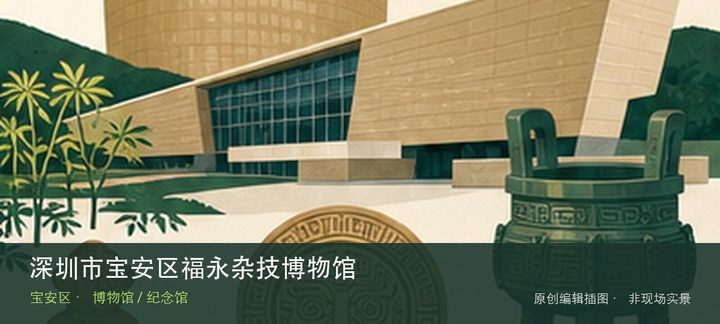
编辑配图·非现场实景深圳市宝安区福永杂技博物馆位于福永，杂技道具、训练方法和演出史将舞台上的技巧还原为长期身体训练与团体协作，专题辨识度很高…
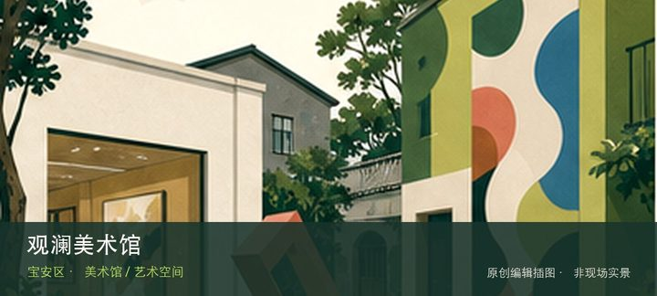
编辑配图·非现场实景观澜美术馆位于官方名录所列广场沿河路片区，官方美术馆名录将其列入宝安区，但名称容易与龙华观澜版画机构混淆，地址核验本身就…
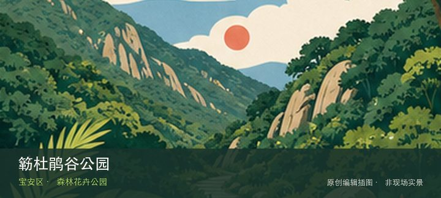
编辑配图·非现场实景簕杜鹃谷公园位于航城街道九围簕杜鹃谷路，约65公顷的城市郊野型森林公园集中展示118个品种、约50万株簕杜鹃，并设置专题…
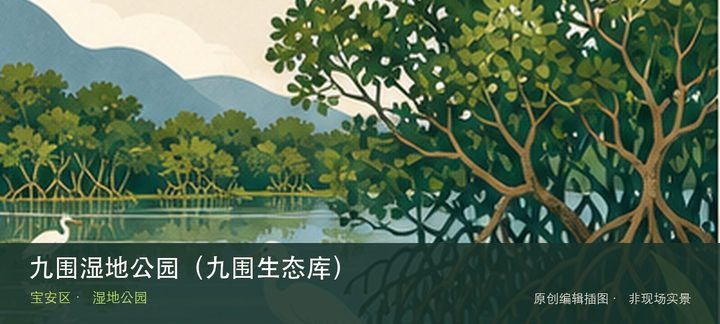
编辑配图·非现场实景九围湿地公园（九围生态库）位于航城街道九围彩绘路、铁岗水库旁，约43万平方米的生态空间以水杉、湿地和水鸟景观连接鲲鹏径第…
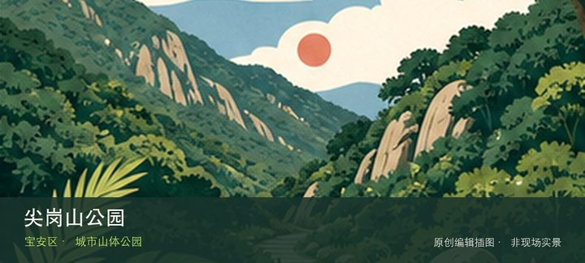
编辑配图·非现场实景尖岗山公园位于新安街道宝石路西侧、上川路与广泰路交会处，约57公顷的双峰山体公园海拔约202米，以山脊栈道、城市远眺和山…
陌上花公园位于石岩街道石岩湖郊野公园环线，3.45万平方米主题花海以爱心花圃、时雨亭和拈花观景台构成石岩湖环线上的季节节…
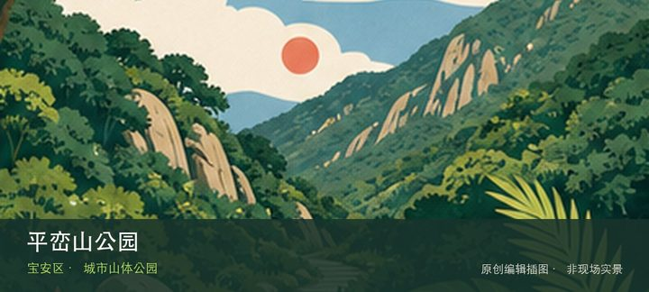
编辑配图·非现场实景平峦山公园位于西乡街道前进二路与宝田三路交会处，超过218公顷的城市山体公园提供连续林下登山路、眺望点和西乡片区日常健身…
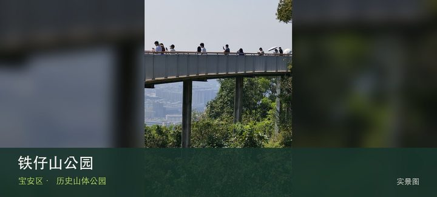
授权实景图铁仔山公园位于西乡立交西北侧，约145公顷山体把登高视野与古墓群等历史线索叠合，适合短线爬升和城市考古观察。这处地点的内…
五指耙公园位于松岗五指耙水库旁，约154公顷的山水公园围绕水库、山林和松岗片区慢行空间展开，游览以开放岸线为准。从五指耙…
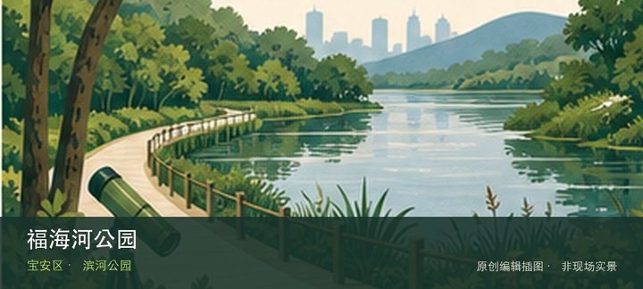
编辑配图·非现场实景福海河公园位于展景路与凤塘大道交会处北侧，约32公顷滨河空间以生态河道、桥下慢行和会展片区公共活动构成西部城市水岸。这里…
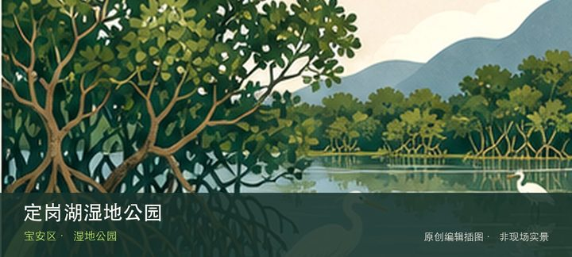
编辑配图·非现场实景定岗湖湿地公园位于松山西路与洪湖路交会处西北侧，十公顷级城市湿地以湖体、挺水植物和社区步道提供松岗片区的安静自然观察点。…
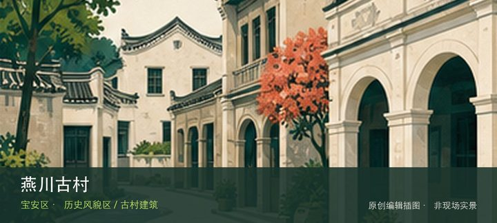
编辑配图·非现场实景燕川古村位于燕罗街道燕川社区，明清村落格局、客家宗祠体系和仍在使用的社区空间共同构成燕罗历史文化线。这处地点的内容并不靠…
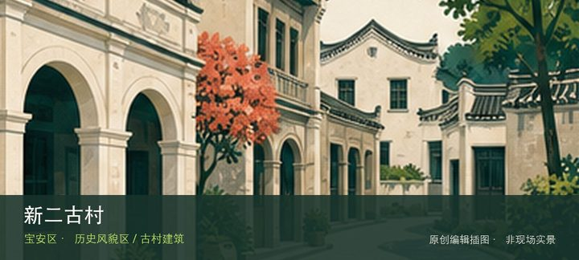
编辑配图·非现场实景新二古村位于新桥街道新二社区，首批历史风貌区之一，传统街巷与宗族建筑嵌在沙井—新桥连续建成区中。现场的空间线索集中在新二…
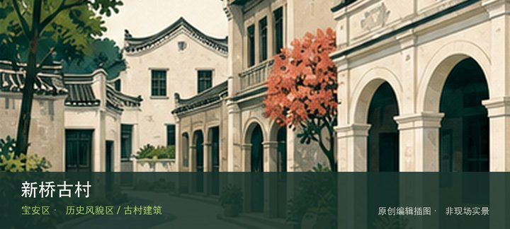
编辑配图·非现场实景新桥古村位于新桥街道新桥社区，古村与清平古墟、新桥粮仓等周边历史节点可组成一条观察墟镇演变的步行线。这里不是只有一个打卡…
桥头古村位于福海街道桥头社区，珠江口东岸传统聚落在工业城区中保留村落尺度，适合观察祠堂、旧巷与现代社区的叠合。把注意力放…
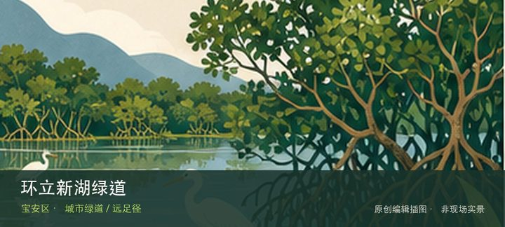
编辑配图·非现场实景环立新湖绿道位于福州大道与政丰北路一带环立新湖，约8.8公里的环湖慢行线通常05:30—22:30开放，书吧、栈道与景观…
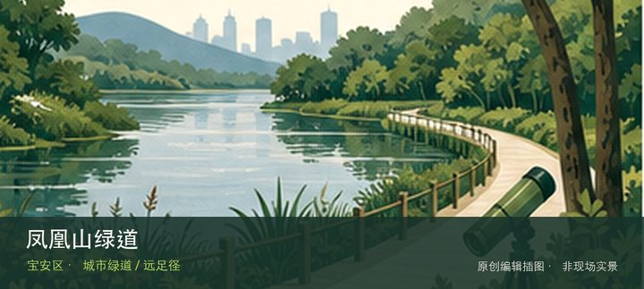
编辑配图·非现场实景凤凰山绿道位于凤凰山森林公园入口至西乡绿道交接点，约9.1公里的山地林道融合登山道与滨水段，是凤凰山外围徒步和骑行体系的…
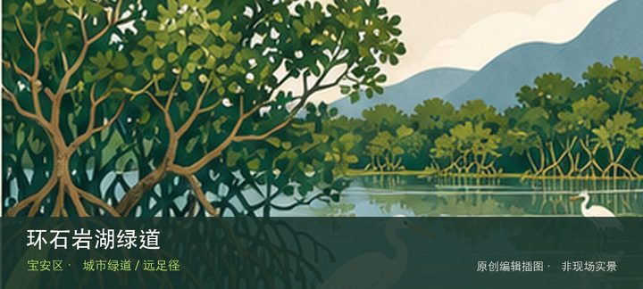
编辑配图·非现场实景环石岩湖绿道位于石岩湖环湖开放区域，约30.8公里的长距离环湖绿道串联多个主题公园，透水慢行路面适合分段步行、慢跑或骑行…
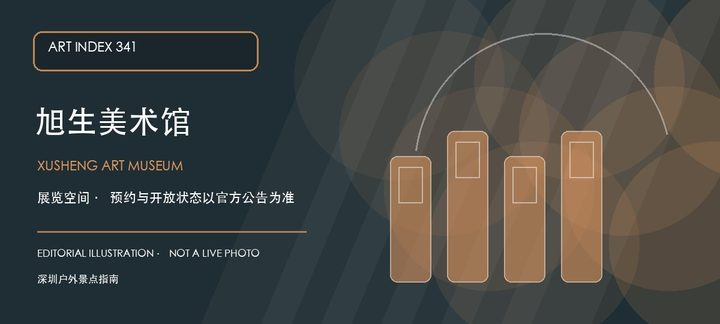
编辑配图·非现场实景旭生美术馆位于西乡共和工业路西发B区的研发大厦内，官方美术馆名录将其列为宝安区独立艺术空间。产业园楼宇语境决定了这里的到…
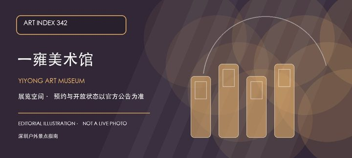
编辑配图·非现场实景一雍美术馆位于西乡街道航城工业区的展丰商务楼内，官方名录将它列为宝安区美术馆。工业区商务楼的空间属性意味着展览、活动和访…
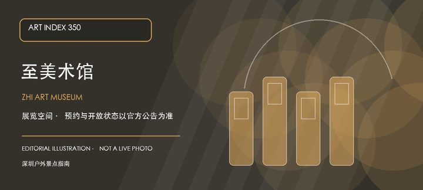
编辑配图·非现场实景至美术馆位于宝安沙井后亭松安路全至科技创新园贰号楼，官方名录确认了它在科技创新园内的独立馆址。园区型美术馆更需要提前确认…